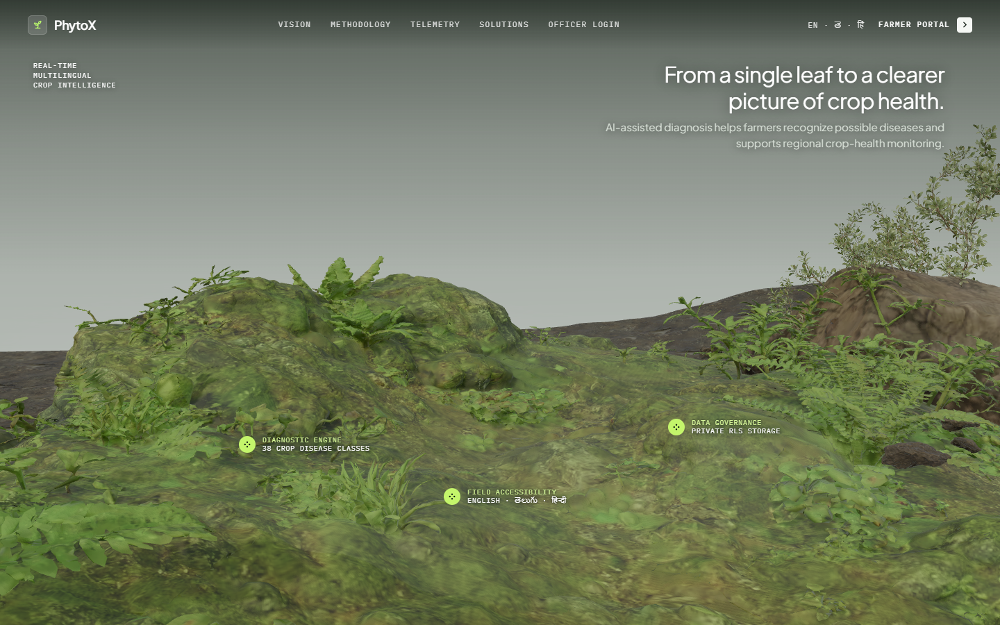
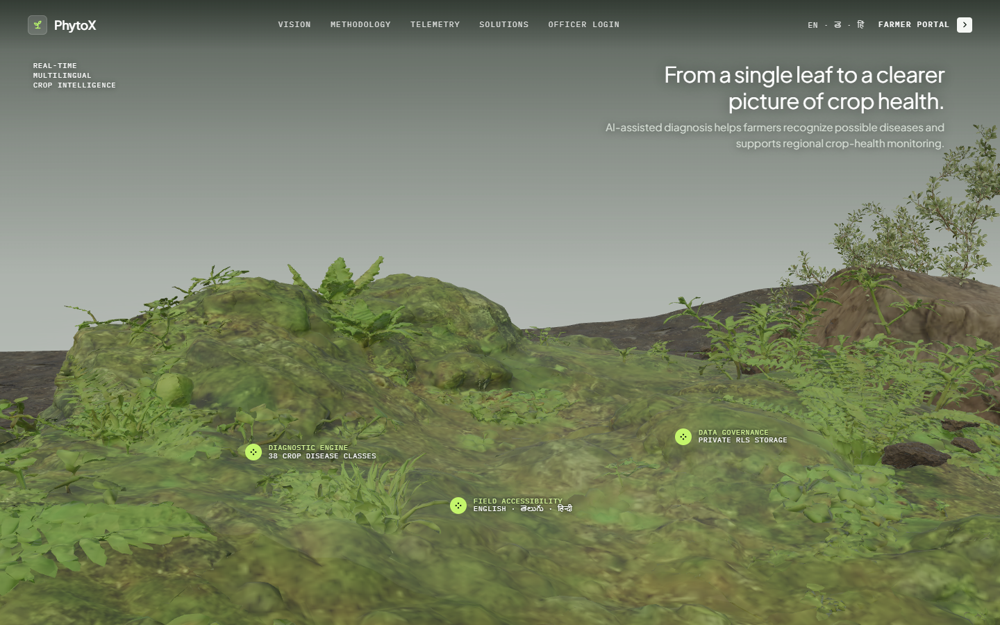
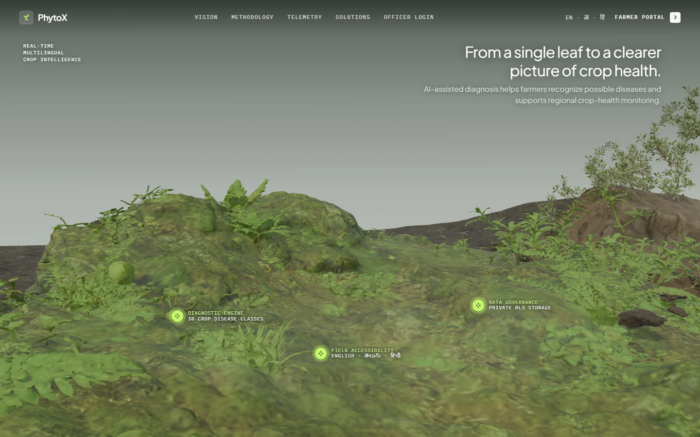
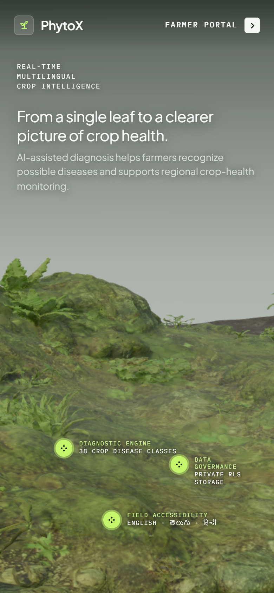
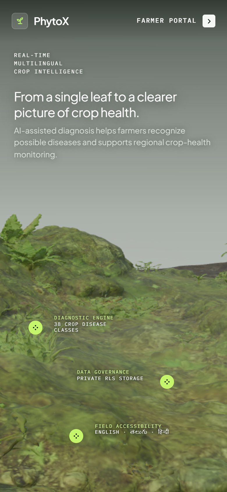
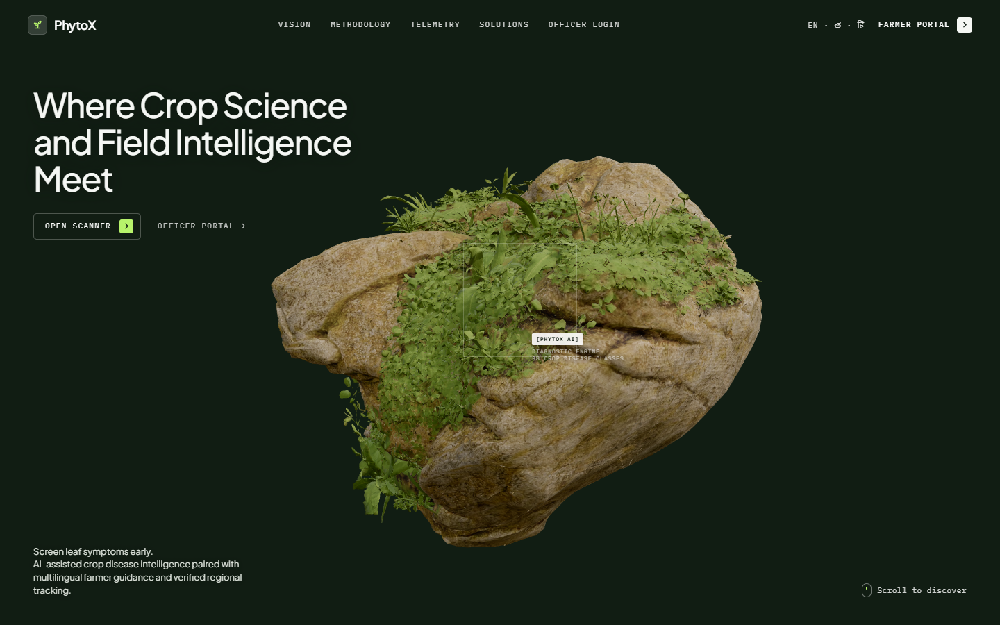
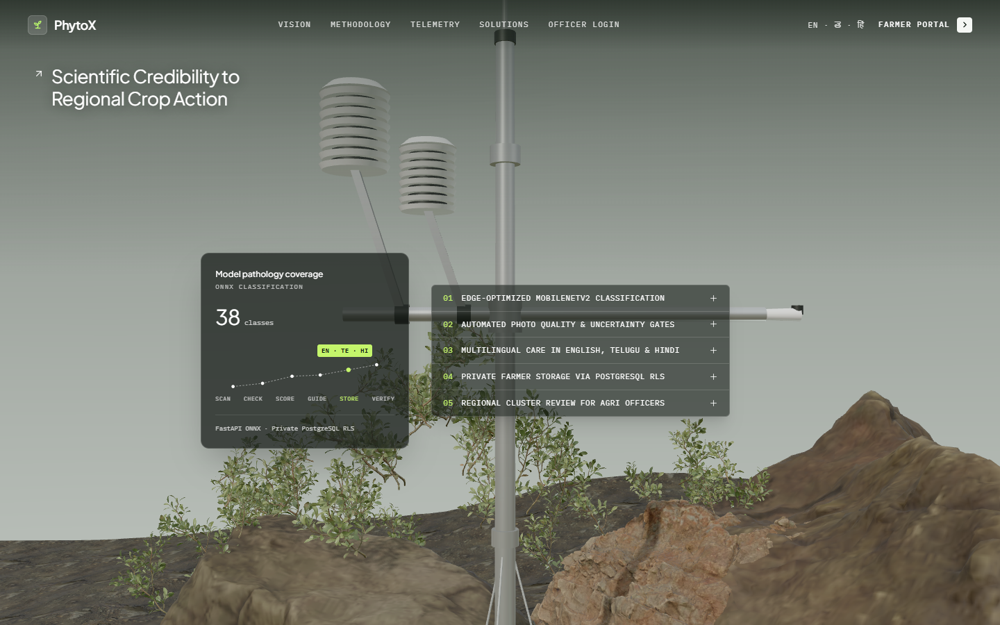

PHYTOX / PRODUCTION COMPARISON / 15 NOVEMBER 2026
The same ecosystem. Less work per frame.
Actual production screenshots. The image option uses a clean render of the existing Meshy terrain, with live React hotspots. The floating island retains its existing design. Read the evidence and limitations before interpreting the performance measurements.
Desktop · 1440 × 900

Before · original 3D4K textures; recurring shadows

Option A · optimized 3DUnchanged geometry; 2K textures; bounded shadows

Option B · cinematic stillWebP; ground WebGL paused; live hotspots
Mobile viewport · 390 × 844

Before

Optimized 3D
Image with larger touch targets
Sequence continuity

Approved floating island
Ground ecosystem

Existing regional scene resumes
These are desktop Chrome captures, including mobile viewport emulation. They are not evidence of physical-phone GPU performance. The source mesh's soft vegetation and flat background remain visible in both approaches.